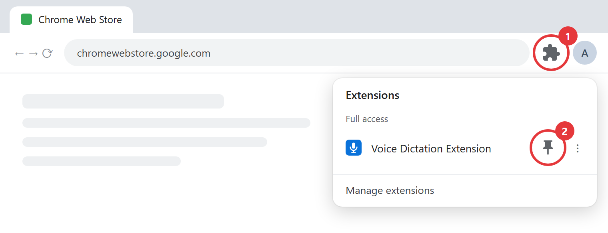
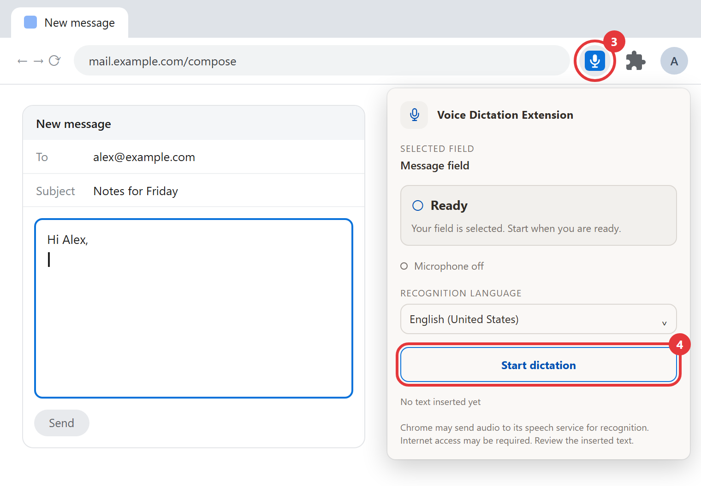

Chrome hides new extensions behind the puzzle icon. Pin it in two clicks.
Click the puzzle icon 1, then the pin next to Voice Dictation Extension 2.

Open an email, a chat or a form and click in a text field. Then click the Voice Dictation Extension icon 3, check the language and press Start dictation 4. If Chrome asks, allow the microphone. Chrome asks for each site, and the request shows the site’s name.

Dictation works in supported text fields on HTTPS pages. Complex document editors, embedded frames, and password and payment fields aren't supported. Chrome may send audio to its speech service for recognition, so you may need an internet connection. There's no automatic sending: review the text before you send it.